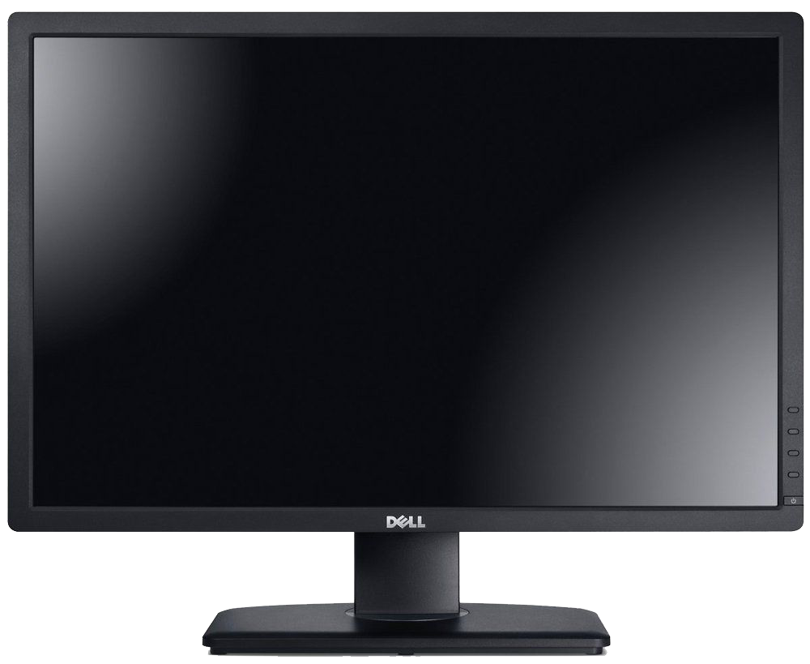
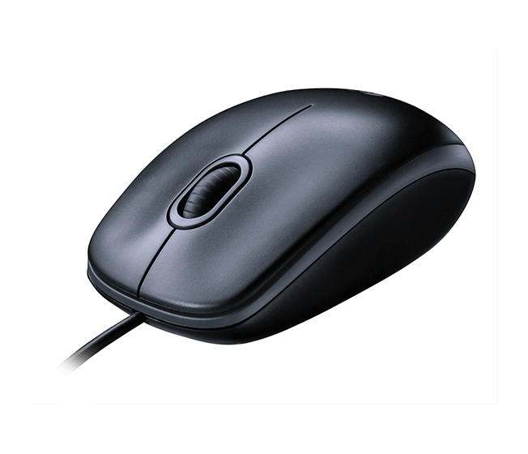
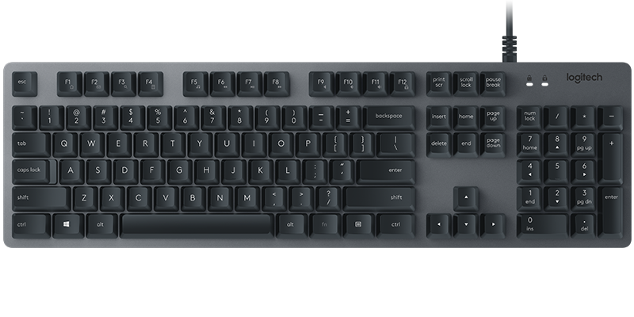

To make it simple, a computer is something used for computing! Who would have guessed? Computers can be as simple as a house calculator, or a super high-tech supercomputer, such used by astronauts! The most usual computers we see are the ones we use at home. They can also hold or store information, which might look like regular language to us, but are actually just a bunch of 1’s and 0’s! How cool is that?
What are the purpose and benefits
Computers can do all sorts of stuff! The most common thing it’s used for today is to browse the internet to either communicate with people, or search the web to do research! The computer has slated itself as a necessity in everyday modern life.
Computers are used to do what a lot of normal people can’t!
Parts of computer



To make it simple, a computer is something used for computing! Who would have guessed? Computers can be as simple as a house calculator, or a super high-tech supercomputer, such used by astronauts! The most usual computers we see are the ones we use at home.